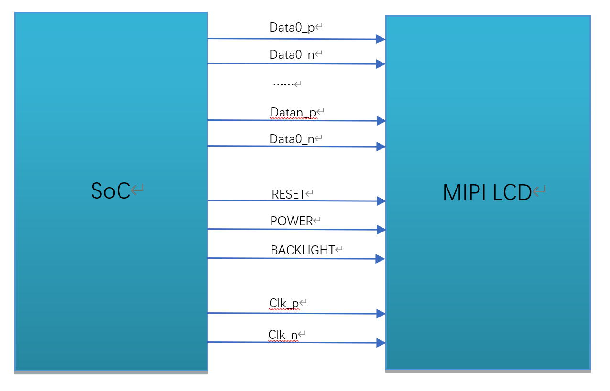

4. MIPI DSI (starting with SDK V6.3.4)¶
Overview
The Display Serial Interface (DSI) is defined by the Mobile Industry Processor Interface Alliance (Mobile Industry Processor Interface Alliance (MIPI Alliance)) defines a high-speed serial interface primarily used to connect processors and display modules.
This chapter describes how to develop and debug an MIPI LCD panel on CVITEK processor solutions, helping customers develop MIPI LCD applications in an orderly and efficient way.
4.1. Environment Preparation¶
4.1.1. MIPI DSI Panel Interface¶
An MIPI DSI panel generally has the following signals, as shown in the figure.
MIPI clock line (CLK)
MIPI data line (DATA), up to 4 lanes (only 1/2/4 lanes are supported)
Backlight control signal (BACKLIGHT)
Reset pin (RESET)
Panel power supply (POWER)
MIPI DSI Interface Wiring Diagram

4.1.2. Hardware Wiring Check¶
Check the hardware wiring and confirm that it is correct. For pin differences, refer to the panel vendor specification and schematic.
4.2. PanelSupportList Framework Overview¶
The SDK uses the PanelSupportList repository to centrally manage all panel-parameter headers.
U-Boot, cvi_mpi, and AliOS share the same panel data, but their configuration methods differ.
The framework is structured as follows:
Panel-parameter headers: all are placed under
PanelSupportList/panels/and follow the naming rules.
Panel-parameter inclusion methods for the three systems:
u-boot / cvi_alios: through
PanelSupportList/cvi_panels.haggregatetotalintoport, useCONFIG_macroincompilestageselectonlyoneoneblockpanel.cvi_panels.honly supportssingleselect, notcanat the same timeenablemultiple panelspanel.cvi_mpi: in
sample_panel.hindirectlyconnect#includethehaspanelreferenceheader file, runwhenthrough--panel=command lineparametermovestateselect, can at the same timecompileintothehaspanelreference.
Basic steps for integrating a new MIPI panel:
Write a correctly named panel-parameter header under
PanelSupportList/panels/.Select the registration method according to the target system (see below).
Configure, enable, and build.
4.3. Configure the MIPI Panel (systemoneflow) ¶
4.3.1. Step 1: Write the Panel-Parameter Header¶
4.3.1.1. Naming Rules¶
Place all header files under PanelSupportList/panels/. Naming format:
dsi_{driveric}_{wxh}_{moduleid}_{lanenum}lane_{fps}fps[_vN].h
driveric: driver IC, smallwrite, for examplehx8394.wxh: validresolution, for example720x1280.moduleid: panelmodelgroup ID; notdeterminewhenuseNULL.lanenum: physical DSI lane number, for example4lane.fps: targetrefreshrate, for example60fps._vN(can select) : When sameone IC + resolution + lane + fps stillneed toareapartnotsamehardwareversionthiswhenuse.
Example:
dsi_hx8394_720x1280_NULL_4lane_60fps.h
dsi_st7701_480x640_NULL_2lane_60fps.h
4.3.1.2. header filecontenttemplate¶
Each header file must include panel_platform.h (provideplatformsuitablecompatiblelayerand DSI_CMD etc.macro) ,
Then, pressorderdefinition timing macro, deviceconfigure, HS timing andInitialization Commands.
The following is a complete example:
#include "panel_platform.h"
/* ---- Timing 宏 ---- */
#define DSI_HX8394_720X1280_NULL_4LANE_60FPS_VACT 1280
#define DSI_HX8394_720X1280_NULL_4LANE_60FPS_VSA 16
#define DSI_HX8394_720X1280_NULL_4LANE_60FPS_VBP 4
#define DSI_HX8394_720X1280_NULL_4LANE_60FPS_VFP 6
#define DSI_HX8394_720X1280_NULL_4LANE_60FPS_HACT 720
#define DSI_HX8394_720X1280_NULL_4LANE_60FPS_HSA 64
#define DSI_HX8394_720X1280_NULL_4LANE_60FPS_HBP 36
#define DSI_HX8394_720X1280_NULL_4LANE_60FPS_HFP 128
#define DSI_HX8394_720X1280_NULL_4LANE_60FPS_FPS 60
/* ---- MIPI Tx 设备配置 ---- */
struct combo_dev_cfg_s dev_cfg_dsi_hx8394_720x1280_NULL_4lane_60fps = {
.devno = 0,
.lane_id = {MIPI_TX_LANE_0, MIPI_TX_LANE_1, MIPI_TX_LANE_CLK,
MIPI_TX_LANE_2, MIPI_TX_LANE_3},
.lane_pn_swap = {true, true, true, true, true},
.output_mode = OUTPUT_MODE_DSI_VIDEO,
.video_mode = BURST_MODE,
.output_format = OUT_FORMAT_RGB_24_BIT,
.sync_info = {
.vid_hsa_pixels = DSI_HX8394_720X1280_NULL_4LANE_60FPS_HSA,
.vid_hbp_pixels = DSI_HX8394_720X1280_NULL_4LANE_60FPS_HBP,
.vid_hfp_pixels = DSI_HX8394_720X1280_NULL_4LANE_60FPS_HFP,
.vid_hline_pixels = DSI_HX8394_720X1280_NULL_4LANE_60FPS_HACT,
.vid_vsa_lines = DSI_HX8394_720X1280_NULL_4LANE_60FPS_VSA,
.vid_vbp_lines = DSI_HX8394_720X1280_NULL_4LANE_60FPS_VBP,
.vid_vfp_lines = DSI_HX8394_720X1280_NULL_4LANE_60FPS_VFP,
.vid_active_lines = DSI_HX8394_720X1280_NULL_4LANE_60FPS_VACT,
.vid_vsa_pos_polarity = false,
.vid_hsa_pos_polarity = true,
},
.pixel_clk = PIXEL_CLK(DSI_HX8394_720X1280_NULL_4LANE_60FPS),
};
/* ---- HS timing 配置 ---- */
struct hs_settle_s hs_timing_cfg_dsi_hx8394_720x1280_NULL_4lane_60fps = {
.prepare = 6, .zero = 32, .trail = 1
};
/* ---- 初始化命令 ---- */
struct dsc_instr dsi_init_cmds_dsi_hx8394_720x1280_NULL_4lane_60fps[] = {
DSI_CMD(0, 0xb9, 0xff, 0x83, 0x94),
DSI_CMD(0, 0xb1, 0x50, 0x15, 0x75, 0x09, 0x32, 0x44, 0x71, 0x31,
0x4d, 0x2f, 0x56, 0x73, 0x02, 0x02),
/* ... 更多初始化命令 ... */
DSI_CMD(120, 0x11), /* Sleep Out, delay 120ms */
DSI_CMD(20, 0x29), /* Display On, delay 20ms */
};
4.3.1.3. key data-structure description¶
combo_dev_cfg_s (MIPI Tx deviceattribute)
struct combo_dev_cfg_s {
unsigned int devno;
enum mipi_tx_lane_id lane_id[LANE_MAX_NUM];
enum output_mode_e output_mode;
enum video_mode_e video_mode;
enum output_format_e output_format;
struct sync_info_s sync_info;
unsigned int pixel_clk;
bool lane_pn_swap[LANE_MAX_NUM];
};
Member Name |
Description |
|---|---|
devno |
MIPI Tx devicenumber, default 0 |
lane_id |
host and panel sides Lane numbercorrespondence, unuseduse Lane fill -1 that is, can . a total of 5 itemmember, sequentiallyrespectivelyrepresenthost side MIPI_TX_0 ~ MIPI_TX_4, actualfill incontentneed toaccording tocorrespondingtopanel side MIPI lane number. for example, firstitemmemberishost MIPI_TX_0, checkcircuitschematiccorrespondingtopanel side MIPI lane3, thenfill inis MIPI_TX_LANE_3. correspondencenotcorrect, willcausepanelcannotlight up. |
output_mode |
MIPI Tx outputmode, default OUTPUT_MODE_DSI_VIDEO |
video_mode |
MIPI Tx videomode, default BURST_MODE |
output_format |
MIPI Tx outputformat, default OUT_FORMAT_RGB_24_BIT |
sync_info |
MIPI Tx devicesynchronizationinformation (seeunderside) |
pixel_clk |
pixelclock, unitis KHz. use #define PIXEL_CLK(x) \
((x##_VACT + x##_VSA + x##_VBP + x##_VFP) \
* (x##_HACT + x##_HSA + x##_HBP + x##_HFP) * x##_FPS / 1000)
lane_clk according to pixel_clk derive backward, conversionformula: lane_clk = pixel_clk × 24 / 4 / 2 (24 means RGB888 each pixel occupy 24 bits, 4 meansuse 4 item Data Lane, 2 means MIPI clk isdual-edge triggered) |
lane_pn_swap |
MIPI Tx Lane P/N extremeiswhether to swap true: swap false: notswap |
sync_info_s (MIPI Tx devicesynchronizationinformation)
struct sync_info_s {
unsigned short vid_hsa_pixels;
unsigned short vid_hbp_pixels;
unsigned short vid_hfp_pixels;
unsigned short vid_hline_pixels;
unsigned short vid_vsa_lines;
unsigned short vid_vbp_lines;
unsigned short vid_vfp_lines;
unsigned short vid_active_lines;
bool vid_vsa_pos_polarity;
bool vid_hsa_pos_polarity;
};
Member Name |
Description |
|---|---|
vid_hsa_pixels |
Horizontal Sync Pulse (HSA) , unitispixel |
vid_hbp_pixels |
Horizontal Blankingafterporch (HBP) , unitispixel |
vid_hfp_pixels |
Horizontal Blankingbeforeporch (HFP) , unitispixel |
vid_hline_pixels |
Horizontal active area (HACT) , unitispixel |
vid_vsa_lines |
Vertical Sync Pulse (VSA) , unitisline |
vid_vbp_lines |
Vertical Blankingafterporch (VBP) , unitisline |
vid_vfp_lines |
Vertical Blankingbeforeporch (VFP) , unitisline |
vid_active_lines |
Vertical active area (VACT) , unitisline |
vid_vsa_pos_polarity |
Vertical active-signal polarity, false isHighvalid, true isLowvalid |
vid_hsa_pos_polarity |
Horizontal active-signal polarity, false isHighvalid, true isLowvalid |
MIPI DSI protocolunder MIPI pixelareaillustration

It is recommended to first define the timing parameters from the panel specification as macros (useheader file stem largewriteshapeformoperationisbeforesuffix) ,
thenin sync_info ininclude, avoidraw constantspartscatteredineachplacedifficultwithmaintenance.
hs_settle_s (MIPI Tx HS timing)
struct hs_settle_s {
unsigned char prepare;
unsigned char zero;
unsigned char trail;
};
Member Name |
Description |
|---|---|
prepare |
MIPI Tx prepare signal, default value 6 |
zero |
MIPI Tx zero signal, default value 32 |
trail |
MIPI Tx trail signal, default value 1 |
MIPI Tx timing diagram

4.3.1.4. Initialization Commands¶
Panel initialization commands are defined with DSI_CMD() Macro, does not need to be written manually data_type and size.
macrowillautomaticpressdatabytesnumberselect data type:
1 bytes →
0x05(onlyhasregisteraddress, nonedata)2 bytes →
0x15(registeraddress + 1 itemdata)3 bytesandwithon →
0x29(registeraddress + 2 itemandwithondata)
/* 第一个参数始终是 delay（发送后延时，单位 ms），后面是寄存器地址 + 数据 */
#define DSI_CMD(delay_ms, ...) \
{.delay = (delay_ms), \
.data_type = ..., \
.size = sizeof(...), \
.data = (CVI_U8[]){__VA_ARGS__} }
useExample:
struct dsc_instr dsi_init_cmds_dsi_hx8394_720x1280_NULL_4lane_60fps[] = {
DSI_CMD(0, 0xb9, 0xff, 0x83, 0x94), /* 多字节，自动选 0x29 */
DSI_CMD(0, 0x36, 0x02), /* 2 字节，自动选 0x15 */
DSI_CMD(120, 0x11), /* Sleep Out，1 字节 → 0x05 */
DSI_CMD(20, 0x29), /* Display On */
};
If panelmanufacturerspecifiednotsame data type (if 0x23, 0x39) , use DSI_CMD_TYPE displayformspecified:
DSI_CMD_TYPE(0, 0x39, 0xff, 0x77, 0x01, 0x00),
The initialization sequence is provided by the panel vendor. Refer to the panel specification or Driver IC datasheet for the meaning of each command.
4.3.2. Step 2: Register the panel-parameter header file¶
Select the registration method according to the target system.
4.3.2.1. u-boot / cvi_alios registration method (cvi_panels.h) ¶
in PanelSupportList/cvi_panels.h inincreaseone #elif block.
cvi_panels.h is u-boot and cvi_alios a total ofusecompilestagesingleselectintoport,
through CONFIG_ macrodetermineusewhichoneblockpanel, notcanat the same timeselectmultiple panelspanel.
#elif CONFIG_DSI_HX8394_720X1280_NULL_4LANE_60FPS
#include "panels/dsi_hx8394_720x1280_NULL_4lane_60fps.h"
static struct panel_desc_s panel_desc = {
.panel_name = "HX8394-720x1280-NULL-4lane-60fps",
.dev_cfg = &dev_cfg_dsi_hx8394_720x1280_NULL_4lane_60fps,
.hs_timing_cfg = &hs_timing_cfg_dsi_hx8394_720x1280_NULL_4lane_60fps,
.dsi_init_cmds = dsi_init_cmds_dsi_hx8394_720x1280_NULL_4lane_60fps,
.dsi_init_cmds_size = ARRAY_SIZE(dsi_init_cmds_dsi_hx8394_720x1280_NULL_4lane_60fps),
};
Note:
CONFIG_macrobyheader file stem largewritederive (dsi_hx8394_720x1280_NULL_4lane_60fps→CONFIG_DSI_HX8394_720X1280_NULL_4LANE_60FPS) .notthenuseoldform
MIPI_PANEL_HX8394etc.differencename, systemoneuseCONFIG_macro.
4.3.2.2. cvi_mpi registration method (sample_panel.h + sample_panel.c) ¶
cvi_mpi notuse cvi_panels.h, andisin sample_panel.h indirectlyconnect include
thehaspanelreferenceheader file, runwhenthroughcommand lineparameterselect.
in
sample_panel.hinAdd#include:
#include "dsi_hx8394_720x1280_NULL_4lane_60fps.h"
in
sample_panel.cSAMPLE_SET_PANEL_DESCfunctioninincrease case:
case DSI_PANEL_HX8394_EVB:
g_panel_desc.panel_type = PANEL_MODE_DSI;
g_panel_desc.stdsicfg.dev_cfg =
(struct combo_dev_cfg_s *)&dev_cfg_dsi_hx8394_720x1280_NULL_4lane_60fps;
g_panel_desc.stdsicfg.hs_timing_cfg =
&hs_timing_cfg_dsi_hx8394_720x1280_NULL_4lane_60fps;
g_panel_desc.stdsicfg.dsi_init_cmds =
dsi_init_cmds_dsi_hx8394_720x1280_NULL_4lane_60fps;
g_panel_desc.stdsicfg.dsi_init_cmds_size =
ARRAY_SIZE(dsi_init_cmds_dsi_hx8394_720x1280_NULL_4lane_60fps);
break;
cvi_mpi methodsupportcompileintothehaspanelreference, runwhenuse ./sample_panel --panel=xxx
switch, suitable fordebugstepsegmentfastverification.
4.3.3. Step 3: enable the configuration and build¶
4.3.3.1. u-boot configuration¶
First, runscriptthisgenerate Kconfig (scan panels/ Contentsunderthehas .h file) :
cd PanelSupportList
python3 gen_panel_config.py
The generated Kconfig.panels is used by U-Boot, includingsimilarwithundercontent:
config DSI_HX8394_720X1280_NULL_4LANE_60FPS
bool "dsi_hx8394_720x1280_NULL_4lane_60fps"
help
"y" Config dsi_hx8394_720x1280_NULL_4lane_60fps.
Then enable it using either of the following methods:
make u-boot-menuconfigentergraphicalinterfaceselectsideboard.orin
build/boards/<board>/u-boot/<board>_defconfiginAddCONFIG_DSI_HX8394_720X1280_NULL_4LANE_60FPS=y.
4.3.3.2. cvi_alios configuration¶
in cvi_alios/solutions/normboot/package_yamls/package.yaml.turnkey
set the corresponding macro to 1 and the others to 0:
CONFIG_DSI_HX8394_720X1280_NULL_4LANE_60FPS: 1
CONFIG_PANEL_HX8394: 0
Note: The old CONFIG_PANEL_xxx aliases are retained but set to 0; new panels uniformly use CONFIG_DSI_xxx.
4.3.3.3. cvi_mpi configuration¶
cvi_mpi requires no build-time configuration; all panel parameters are included in sample_panel.h Medium include.
compileafterthroughcommand lineselect:
./sample_panel --panel=HX8394_EVB
4.3.3.4. build¶
After completing the configuration above, run build_all to build the complete system.
4.4. RESET / POWER / BACKLIGHT pin configuration¶
Of the three systems, only U-Boot supports automatic GPIO control through the device tree; cvi_mpi and cvi_alios require GPIOs to be controlled manually in code.
4.4.1. u-boot configuration method (DTS) ¶
U-Boot configures GPIOs through the device tree (DTS).
in build/boards/default/dts/cv184x/cv184x_base.dtsi mipi_tx sectionpointinconfigure:
mipi_tx: mipi_tx {
compatible = "cvitek,mipi_tx";
reset-gpio = <&porte 2 GPIO_ACTIVE_LOW>;
pwm-gpio = <&porte 0 GPIO_ACTIVE_HIGH>;
power-ct-gpio = <&porte 1 GPIO_ACTIVE_HIGH>;
clocks = <&clk CV181X_CLK_DISP_VIP>, <&clk CV181X_CLK_DSI_MAC_VIP>;
clock-names = "clk_disp", "clk_dsi";
};
Note:
reset-gpio: resetbitspin, presspanelspecificationdocumentfill in GPIO group, sequencenumberandvalidlevel. driveraccording toGPIO_ACTIVE_LOW/GPIO_ACTIVE_HIGHautomaticgenerate high-low-high (or low-high-low) resetbitstiming.pwm-gpio: backlightcontrol. debugstepsegmentcan firstuse GPIO controllight upbacklight; laterifneed toadjustluma, configuration pinmux is PWM functionafterwillthislinedelete, changeuse PWM method.power-ct-gpio: Panel powercontrol. ifpaneldirectlyconnectpower supplynoneneed tosoftwarecontrolthendelete.Confirm the GPIO group and index for each pin against CV184X_PINOUT_CN.
For unused pins, omit the corresponding DTS property; the driver skips it when loading.
4.4.2. cvi_mpi configuration method (manual GPIO) ¶
cvi_mpi does not parse GPIO properties in the DTS; control them at the application layer through sysfs or
sample_panel command lineparametermanualcontrol.
4.4.2.1. methodone: sample_panel command lineparameter (onlydebuguse, codeinalreadycomment) ¶
Pass GPIO numbers at runtime:
./sample_panel --panel=HX8394_EVB --gpio=354,0,353,1,352,1
The three GPIOs are RESET, POWER, and PWM in order; each GPIO takes two parameters (number and level).
4.4.2.2. Method 2: shell manual operation sysfs¶
First use cat /sys/kernel/debug/gpio to view the GPIO number ranges,
after confirming the starting number for each GPIO group, calculate the target pin global number:
# 假设 RESET=GPIOE2(354), POWER=GPIOE1(353), PWM=GPIOE0(352)
echo 352 > /sys/class/gpio/export
echo 353 > /sys/class/gpio/export
echo 354 > /sys/class/gpio/export
echo out > /sys/class/gpio/gpio352/direction
echo out > /sys/class/gpio/gpio353/direction
echo out > /sys/class/gpio/gpio354/direction
echo 1 > /sys/class/gpio/gpio352/value # 背光点亮
echo 1 > /sys/class/gpio/gpio353/value # 电源使能
echo 1 > /sys/class/gpio/gpio354/value # RESET 拉高
sleep 0.02
echo 0 > /sys/class/gpio/gpio354/value # RESET 拉低
sleep 0.02
echo 1 > /sys/class/gpio/gpio354/value # RESET 拉高
During debugging, the backlight can initially be controlled by GPIO; when brightness adjustment is needed later, configure pinmux as PWM in U-Boot and omit the backlight GPIO from the command.
4.4.3. cvi_alios configuration method (PLATFORM_PanelInit) ¶
cvi_alios does not parse the device tree; GPIO control is completed manually in PLATFORM_PanelInit
thefunctionbitsin board-level customizationContentsunder, For example:
cvi_alios/solutions/normboot/customization/<board>/src/custom_platform.c
in PLATFORM_PanelInit use _GPIOSetValue to control each pin manually:
int PLATFORM_PanelInit(void)
{
#if CONFIG_PANEL_HX8394
u8 pw_port, pw_pin, bl_port, bl_pin, rst_port, rst_pin;
pw_port = 4; pw_pin = 1; /* POWER → GPIOE1 */
bl_port = 4; bl_pin = 0; /* BACKLIGHT → GPIOE0 */
rst_port = 4; rst_pin = 2; /* RESET → GPIOE2 */
_GPIOSetValue(pw_port, pw_pin, 1);
_GPIOSetValue(bl_port, bl_pin, 1);
_GPIOSetValue(rst_port, rst_pin, 1);
udelay(20 * 1000);
_GPIOSetValue(rst_port, rst_pin, 0);
udelay(20 * 1000);
_GPIOSetValue(rst_port, rst_pin, 1);
udelay(20 * 1000);
#endif
return CVI_SUCCESS;
}
Note:
portis GPIO group number: 0 = GPIOA, 1 = GPIOB, ..., 4 = GPIOE.pinisgroupinNo., compare with"CV184X_PINOUT_CN"confirm.Refer to the panel specification for the reset sequence, which is typically high-low-high (or low-high-low).
When adding panel parameters, add the corresponding
PLATFORM_PanelInitinAdd corresponding#if CONFIG_xxxbranch.To adjust backlight brightness with PWM, configure pinmux and the PWM registers separately; this section only controls GPIOs.
4.5. Replace the Logo image¶
Place the customer logo image in the corresponding board configuration directory:
build/boards/<board>/bootlogo/logo.jpg
For example:
build/boards/cv184x/cv1842cp_wevb_0015a_spinand/bootlogo/logo.jpg
If the board directory does not contain bootlogo/, create the directory and place logo.jpg.
If the board directory does not contain logo.jpg, it is automatically copied from
build/tools/common/bootlogo/logo.jpg copy.
Note:
The original logo.jpg cannot be programmed directly; it must be processed with
copy_toolsfirst.I80 panels require a 24-bit BMP image; other panel types require a YUV420-format JPG.
For details about logo display, see the CV184X Startup Screen User Guide.
4.6. Build, Program, and Verify¶
After completing all the steps above, rebuild and program the image. Power on the device to verify that the MIPI panel lights up correctly.
If the display is abnormal, troubleshoot it as follows:
Confirm that the backlight is on.
confirm RESET pinlevelstatusreachexpected (if high-low-high) .
Confirm that panel power is normal.
execute
devmem 0x0a094094 32 0x0701000ato enable the VO test pattern; if panel initialization succeeds, a color bar appears.
The test-pattern register is shown below:

If the test pattern is normal but no image is displayed, the issue is usually in the initialization sequence or timing parameters; If test pattern alsonotnormal, check MIPI Lane order, RESET/POWER/PWM configuration, andusemultimeter/oscilloscopeconfirmcircuitlevel.
Check the Driver IC datasheet or consult the panel vendor to enable the panel BIST mode (usuallyisadjustinitialization sequenceinaregistervalue) , can fastdetermineishost sideconfigureproblemalsois a panel problem.
BIST abnormal -> check the Lane order, RESET, POWER, PWM, and hardware circuitry, or consult the panel vendor.
BIST normal -> the configuration and hardware are normal; focus on adjusting
sync_info_sin timing Parameters.
Debugging tip: first use sample_panel on the cvi_mpi side to quickly verify panel parameters,
with the command format ./sample_panel --panel=<PANEL_NAME>. then build and verify the complete system after it works,
to avoid repeatedly programming U-Boot.